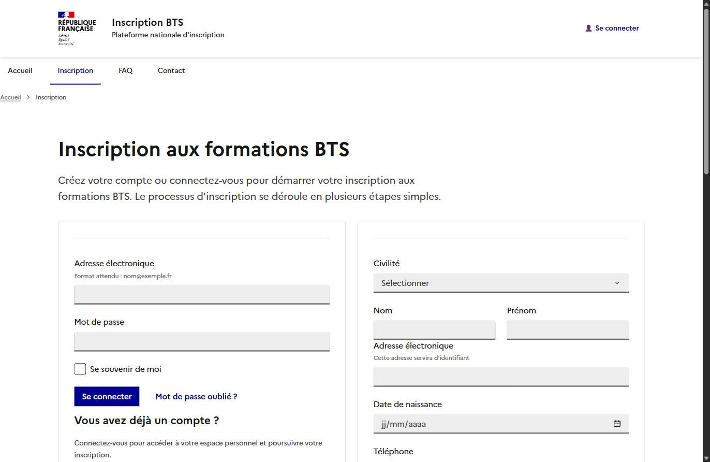
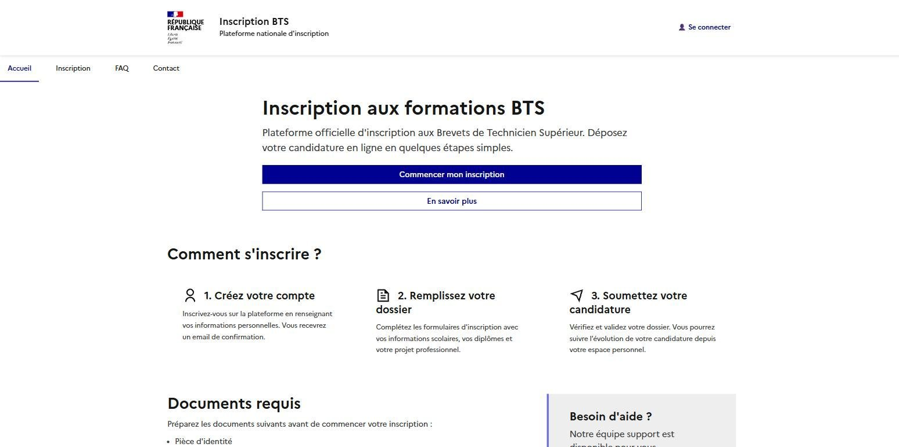

EasyBTS — Application web pour étudiants
Application web réalisée en équipe dans le cadre du BTS SIO avec Symfony.
Mes contributions
- Développement de la page de connexion.
- Liaison de l'authentification avec MySQL grâce à Symfony et Doctrine ORM.
- Intégration d'une fonctionnalité d'envoi d'e-mails.
- Participation à l'intégration du Système de design de l'État.
- Utilisation de Git et GitHub pour le travail collaboratif.
PHP · Symfony · MySQL · Doctrine ORM · Twig · DSFR · Git

